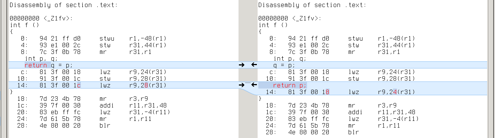
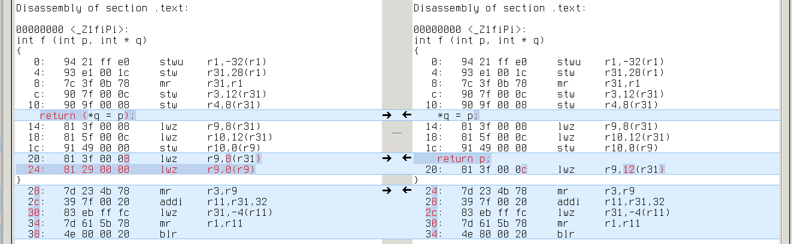
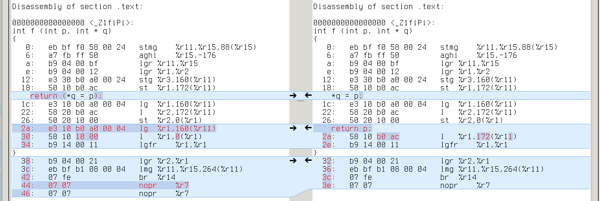
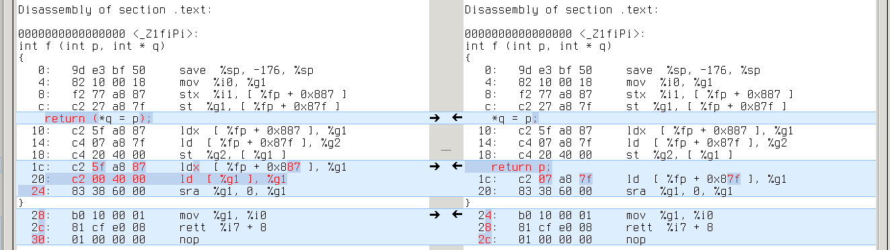
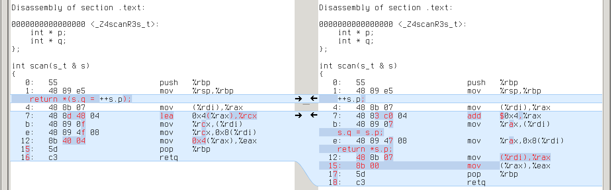
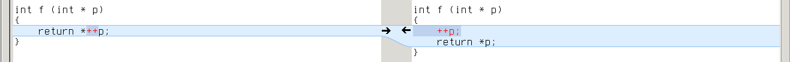

comparing assembly for similar C/C++ code
What is more efficient:
c = *(q = ++p);or
++p;
q = p;
c = *p;?
I came across this while thinking about RE2C input model. RE2C generates complex expressions to manipulate input stream:
yych = *++YYCURSOR; yych = *(YYMARKER = YYCURSOR); yych = *(YYMARKER = ++YYCURSOR); YYMARKER = ++YYCURSOR;
I wanted to reduce the number of basic operations on input, so I decided to simplify these expressions:
yych = *++YYCURSOR; —> ++YYCURSOR; yych = *YYCURSOR; yych = *(YYMARKER = YYCURSOR); —> YYMARKER = YYCURSOR; yych = *YYCURSOR; yych = *(YYMARKER = ++YYCURSOR); —> ++YYCURSOR; YYMARKER = YYCURSOR; yych = *YYCURSOR; YYMARKER = ++YYCURSOR; —> ++YYCURSOR; YYMARKER = YYCURSOR;
This transformation is perfectly valid from C/C++ standpoint. Yet it can affect performance: compilers may prefer one case to the other. Let’s go down to assembly and find out. :)
I’ll keep to the following plan:
- take RE2C test collection
- pick those tests which reveal difference in RE2C-generated code
- compile both cases (using various compiler/optimizations/target configurations)
- objdump object files
- diff assembly
- investigate the difference (I will use small examples cut from real programs and meld).
gcc
gcc-4.9.2:
compiled different -O0 different -O1 different -O2 different -O3 different -Ofast different -Os x86_64 228 140 0 1 0 0 0 x86 228 140 0 0 0 0 0 mingw64 227 139 0 1 0 0 0 mingw32 227 139 0 0 0 0 0 alpha 228 140 0 1 0 0 0 armv5tel 228 140 0 0 0 0 0 armv7a 228 140 0 0 0 0 0 ia64 228 140 0 0 0 0 0 mips64 228 140 0 0 0 0 0 powerpc64 228 140 0 1 0 0 0 powerpc 228 140 0 0 0 0 0 s390x 228 140 0 1 0 0 0 sparc64 228 140 0 1 0 0 0
gcc-4.8.3:
compiled different -O0 different -O1 different -O2 different -O3 different -Ofast different -Os x86_64 228 140 19 19 19 19 19 x86 228 140 19 19 19 19 19 mingw64 227 139 19 19 19 19 19 mingw32 227 139 19 19 19 19 19 alpha 228 140 19 11 11 11 9 armv5tel 228 140 19 19 19 19 19 armv7a 228 140 19 19 19 19 19 ia64 228 140 19 11 11 11 6 mips64 228 140 19 19 19 19 19 powerpc64 228 140 19 19 19 19 19 powerpc 228 140 19 19 19 19 19 s390x 228 140 19 19 19 19 19 sparc64 228 140 19 19 19 19 19
So what do we have here?
-O0
On -O0 GCC-4.8.3 and GCC-4.9.2 are unanimous: many files differ, but in most cases instructions remain the same. What differs is the offset of YYCURSOR and YYMARKER on stack. Like in this simple example:

x86_64: q’s address is -0x4(%rbp), while p’s is -0x8(%rbp)

alpha: q’s address is 20(fp), while p’s is 16(fp)
armv7a: q’s address is [fp,#-8], while p’s is [fp,#-12]

mips64: q’s address is 12(s8), while p’s is 8(s8)

powerpc: q’s address is 28(r31), while p’s is 24(r31)

s390x: q’s address is 160(%r11), while p’s is 164(%r11)

sparc64: q’s address is [%fp+0x7f7], while p’s is [%fp+0x7fb]

ia64: q’s address is [r2+4], while p’s is [r2] (extra ‘adds r14=4,r2’ to compute r2+4)
Real difference appears in cases where YYCURSOR and YYMARKER have different level of indirection (say, YYCURSOR is of type ‘char *’ and YMARKER is of type ‘char **’). It leads to one extra/missing load from memory. Like this:

x86_64: *q requires one more ‘mov (%rax),%eax’ than p

alpha: same with ‘ldl t0,0(t0)’

armv7a: same with ‘ldr r3,[r3]’

mips64: same with ‘lw v0,0(v0)’

powerpc: same with ‘lwz r9,0(r9)’

s390x: same with ‘l %r1,0(%r1)’

sparc64: same with ‘ld [%g1],%g1’

ia64: same with ‘ld4 r14=[r14]’

Another group of differences is jump length (it may vary because of extra/missing instructions and varying length of instructions).
And that’s all for -O0: the code is a trivial reflection of C/C++ source, so one can hardly judge it in terms of efficiency.
-O1
Here things start to get interesting: no difference with GCC-4.9.2, but 19 different cases with GCC-4.8.3. Comparing the assembly doesn’t help much: looks like GCC-4.8.3 failed to deduplicate code in the second case:

x86_64:

alpha:

armv7a:

mips64:

powerpc:
s390x:

sparc64:

ia64:

GCC-4.9.2 generates the same code in both cases (without duplicates).
Why difference with GCC-4.8.3? It’s hard to tell from the assembly. We need to trace program transformations one by one.
GCC holds the program through three intermediate representations: GENERIC —> GIMPLE —> RTL. Optimizations are mostly done in GIMPLE (target and language independent) and RTL (low-level). We can dump GIMPLE passes with “-fdump-tree-all” and RTL passes with “-fdump-rtl-all”.
Since difference remains the same on all targets, it’s likely to emerge in one of GIMPLE passes. Both GCC-4.9.2 and GCC-4.8.3 generate the same dumps up to first forward propagation pass (.forwprop1):

Howevwer, forward propagation with GCC-4.9.2 erases the difference:
While with GCC-4.8.3 it’s getting worse:

So that subsequent copy propagation pass (.copyprop1) fails on second file:

Looks like a bug in forward propagation. All these 19 tests which reveal this bug are actually different variants of the same test: they all reduce use of YYMARKER from two times to one, so that YYMARKER becomes a single-use variable. This is kind of a rare case.
I searched for commit that fixes forward propagation in GCC:
$ git clone git://gcc.gnu.org/git/gcc.git
$ cd git
$ git log origin/gcc-4_8-branch..origin/gcc-4_9-branch tree-ssa-forwprop.cAnd soon found this one (verifying was easy after I learned to quickly build GCC from source).
-O2 and higher
With GCC-4.9.2 there’s almost no difference. There is only one different case, it differs only with -O2, only on some targets, and the difference is immaterial — swapped comparison operands and inverted jump condition:
x86_64:

alpha:

powerpc64:

s390x:

sparc64:

With GCC-4.8.3 we see the same 19 cases: the difference creeps in with first forward propagation, outlives all GIMPLE optimizations and fades in RTL (sometimes completely).
It’s hard to read RTL dumps, but with “-fdump-rtl-all-graph” GCC will generate a picture for each RTL pass. We can trace which RTL passes erase the difference in our example on, say, x86_64:
Up to second control flow graph cleanup (.jump2) pass programs were that different:

Half of the difference erased by control flow graph cleanup:

Difference completely gone after basic block reordering (.bbro) pass:
Nice pictures.
conclusion
So what do we have after all? No performance regressions with GCC-4.9.2. Some very rare regressions due to a forward propagation bug in GCC-4.8.3, which almost vanish on -O2 and higher.
clang
clang-3.6.0:
compiled different -O0 different -O1 different -O2 different -O3 different -Ofast different -Os x86_64 227 224 20 18 18 18 18 armv7a 220 217 15 4 4 4 4 powerpc64 220 217 19 8 8 8 8
-O0
Unlike GCC, CLANG is sensitive to decomposition of complex expressions. In the example below, first program gets intermediate result from register, while second program always loads it from stack:

x86_64: repeated ‘mov -0x4(%rbp),%rsi’ on the right vs %rdi on the left

armv7a: repeated ‘ldr r0,[sp,#4]’ on the right vs r1 on the left

powerpc64: repeated ‘ld r3,-16(r1)’ on the right vs r4 on the left

This difference emerges in almost all tests, so CLANG with -O0 is a true performance regression (if only -O0 was about performance).
-O1
With -O1 the difference disappears in most cases, but it is still evident in programs with an extra layer of indirection. We can induce it in our example:

x86_64: repeated ‘mov (%rdi),%rax’ on the right

armv7a: repeated ‘ldr rX,[r0]’ on the right

powerpc64: repeated ‘ld rX,0(r3)’ on the right

So CLANG with -O1 still is a performance regression in some cases.
-O2 and higher
Here difference finally fades.
On x86_64, all different cases are trivial. Either length of some memory loads is changed:

which may cause changes in jump offsets, or instructions are swapped:

On armv7a we again see a few trivial differences with memory loads and swapped instructions.
On powerpc64, however, a strange ‘clrlwi’ emerges in all 8 different cases:

This seems completely pointless: ‘clrlwi r5,r5,24’ clears high-order 24 bits of r5, but they are already cleared by ‘lbz r5,1(r4)’. Bugreport and fix.
conclusion
Performance regressions with -O0 and -O1. No significant difference with -O2 and higher.
pcc
PCC is Portable C compiler.
pcc-1.1.0:
compiled different -O0 different -O1 x86_64 39 39 24
As most tests are written in C++, PCC could only compile 39 of them.
-O0
Almost all different cases look the same. Like this:

Memory/register move and register/register addition vs memory/register addition — not much difference.
-O0
Most of the cases are trivial (they use different general purpose registers). Some cases still differ in the same way as on -O0.
conclusion
No performance regressions.
tcc
TCC is Tiny C compiler.
tcc-0.9.26:
compiled different x86_64 40 40
TCC is not an optimizing compiler.
Like CLANG, TCC is sensitive to decomposition of complex expressions:

First program stores intermediate result in %rax, while second loads it from stack:
Extra memory loads appear in all tests.
conclusion
Performance regressions.
nwcc
NWCC is Nils Weller’s C compiler.
nwcc-0.8.2:
compiled different x86_64 39 39
NWCC has no optimizations yet.
Like CLANG and TCC, NWCC prefers complex expressions. All tests differ in the same way:
First program uses %r9 for intermediate result. Second program loads it from stack:
conclusion
Performance regressions.
conclusion
In general with reasonable optimizatios there’s no difference on real-life programs.
Honestly some performance regressions are still possible even with good optimizations, see for example this GCC bugreport and this CLANG bugreport (both stuck with the same problem: pointer aliasing).
comments powered by Disqus